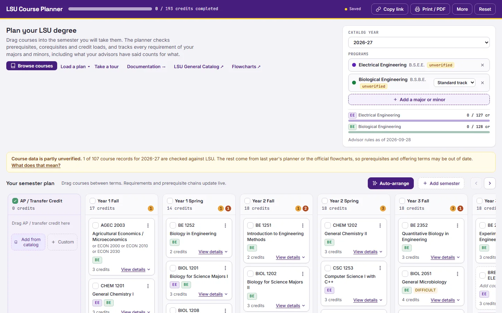

course planner
Drag your courses into semesters and it checks prerequisites and tracks every requirement, even across a double major.
It’s not an official degree audit, so check anything important with your advisor and the catalog.

what it does
- Checks
- It checks prerequisites, corequisites and credit loads as you move courses around, and flags anything that breaks.
- Programs
- Biological Engineering, Electrical Engineering, five Computer Science tracks and the Robotics minor, in any combination, for the 2026-27 catalog.
- Degree audit
- Every requirement for each program and what counts toward it, including the advisor rules for double majors.
- Auto-arrange
- One button lays out everything you haven’t taken yet. It won’t break a prerequisite or put a class in a semester it isn’t offered, and it tries to keep your workload even. Under the hood it’s an integer program solved with HiGHS, right in your browser.
- Sharing
- Your plan saves in your browser and never goes to a server. Copy link puts the whole plan in a URL you can send to your advisor.
- Data
- Programs follow the College of Engineering flowcharts. Some courses aren’t verified against LSU’s data yet, and the planner tells you which.
where it came from
This started as Dr. Bruno Rego’s Biological Engineering course planner. I forked it so it works for other engineering majors too, and for people doing more than one major (like me).
Originally built for the College of Engineering by Dr. Bruno Rego (opens in a new tab). Extended to more engineering majors, and to double majors, by Casey LeBlanc (opens in a new tab).